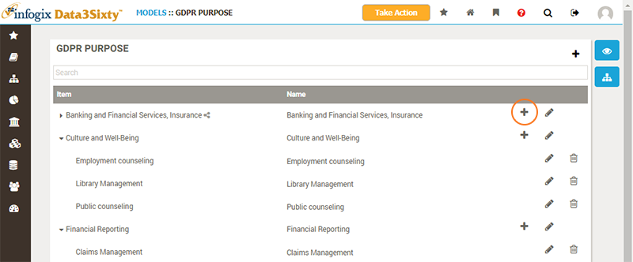
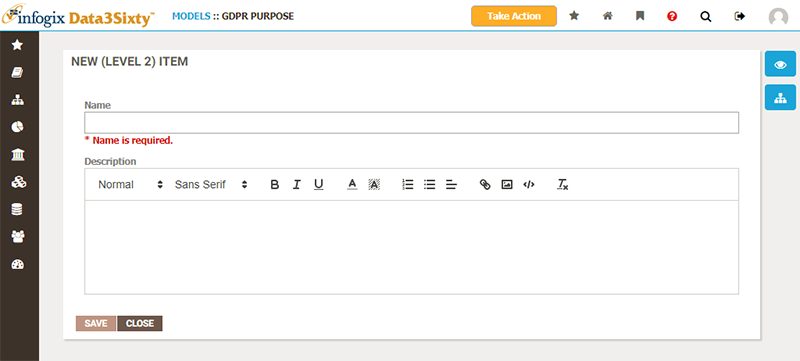
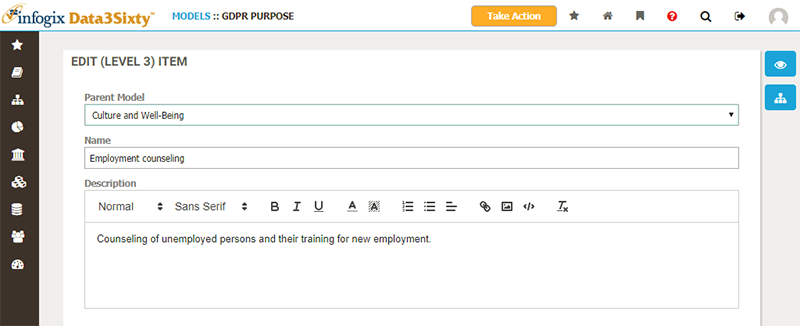

The top-level models used by your organization are typically agreed upon in advance by a group of stakeholders, and can only be created by users with administrator rights. You may find that you are not able to create new top-level models, and should consider whether you need to do so, or whether you can add a sub-item to an existing model in your system.
If you believe that a new top-level model is required, you should typically discuss this with your team of stakeholders to agree upon terms and structure, and then get an administrator of the system to help set up the new model. If you have the administrator rights required to create a new model, or are interested in reading about how to do so, please see the topic Establishing models.
Depending on the responsibilities assigned to you, you may be able to edit and add new items to models. To start, navigate to the model you wish to edit. You can add a new child item to a model asset by clicking the Add button next to an existing model asset:

Note: Note that the Add button is missing from some items. This is because a maximum depth is set on a model, which restricts how deeply nested the model can become. For example, you can specify that a model can only ever be 2 levels deep, as above.
Note: You will also notice that the Delete button is not available for all items. This is because you cannot delete items which have child items: you must delete all of the child items first.
The New Item panel appears, allowing you to define the name and description for the new model asset:

You can also Edit existing model assets. The Edit Item panel allows you to change the name and description, in addition to moving the item to a new parent model if you wish:

Once you have new model assets in place you will typically want to relate other assets, such as Glossary artifacts to them. You can also apply responsibilities to model assets, which will then be inherited by related items, making it possible to use model groupings to simplify ownership management of other assets.
Please see the following topics for more details: